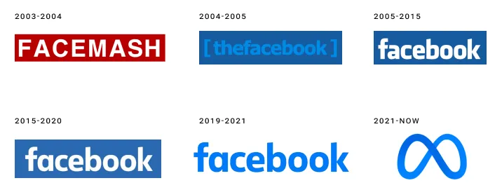

The US 2020 Facebook and Instagram Election Project (US2020) was a sprawling project with dozens of people involved at various levels: like little ol’ me (on the Meta side). Meta spent more than $20 million on it and committed the time of numerous experienced data scientists and engineers. It was huge. But it was also very small compared to the size of Meta.1 In this post, I want to reflect on what, exactly, it was, particularly in light of the eLetters to one of its marquee studies and Kevin Munger’s nice article asking what we learned from the project. The fairest reading of the project is the result of a dialogue between internal and external researchers, so that’s the direction I’m going to work towards.
The idea here is that I want to try to develop a theory of what this project was2. That is, why does the collaboration exist? Should it exist? If and when we want to do Big Social Science like this, what will we be doing? What should we be doing?
To make the argument that US2020 is best understood as a dialogue, I need to start by talking through what and how large Facebook (the company) was and how experimentation works in that context which is defined by the scope of the collective endeavor that is Facebook (the platform). After that I can address what I see as fundamental misperceptions about the nature of US2020: the idea that the project was either industrial research or independent research. It wasn’t, and trying to fit it into one of these molds leads to many confused discussions about the research.
Independence in future projects should not be the goal, but this does not mean that we need to sacrifice reliability or trustworthiness. Quite the opposite. The very human trustworthiness of the project is as a result of the combination of the non-independence (of the internal researchers) and independence (of the academic researchers). The* tension* between the two of these was what made this project valuable. We can accept that this tension will exist, but resolve much of it through the use of pre-analysis plans. This will better allow us to express the agency and expertise of everyone involved in the project and, hopefully, make future projects more likely to exist and be better.
So, where to start?
What was Facebook?

Facebook was an internet technology company from 2004 to 2021. It no longer exists, having been succeeded by “Meta”. At its peak in 2021, it had70,000 employees and 118 billion in revenue, truly staggering numbers that are difficult to comprehend. Around half of those employees were in technical roles3: they directly worked on changing and improving the functioning of the services that Facebook offered. Can you imagine working on a project with 30,000 other people? It’s critical to understand that this is part of what it means to work at Facebook. And it really felt like this, sometimes! Internal tooling changed often (because people were actively working on it!), the use of a Monorepo meant that all engineers pushed code to the same repository and there were meaningful connections in code between projects. To land a commit at Facebook famously only required you to get one other engineer to sign off on it4. The number of commits to the repository was so large that you couldn’t expect to have the same ground truth from one second to the next5. For a sense of the speed at which Facebook changed, read this post detailing some of the deployment systems Facebook used written by Chuck Rossi, a famous6 release engineering guru at the company.
Experimentation at scale
Facebook changed quickly. Temporal validity is a real problem when things change at this pace. But the problem was actually even worse than the sheer scale would suggest! Many of the biggest changes to how Facebook work were gated not by commits of code, but by A/B testing7. The number of active experiments at any one time was on the order of thousands. Even assuming each test had only two groups, this number implies that no two people were likely to experience the same Facebook8. I wouldn’t be surprised if, given the increase in employees relative to when we roughed out this number in around 2016, that number was an order of magnitude higher by 20219.
It’s worth thinking about how these experiments worked a little bit. One thing the handful of people implementing a single test absolutely could not do was to control everything about how the other 30k engineers run their tests. This is simply the reality of working on a project with this many other people.10 This led to difficulties occasionally, in which stuff about the platform changed and rendered a prior test uninformative or incorrect about the current state of the world. On my team, this is why we encouraged two practices: (1) long-run holdouts (where for important features, the rollout of the feature would be to ~99% of users rather than 100%) (2) rerunning important tests to verify results continued to hold.11
Everything is evaluated relative to the sum total of other stuff Facebook is doing on the platform.
The reality of massive simultaneous experimentation and change resulted in internal experiments using the term “status quo” condition rather than “control” condition in experiments. Everything was evaluated relative to the sum total of other stuff Facebook was doing on the platform. As an example, check out the software my former team developed for doing complicated experimentation at platform scale. There is no “control” group, there’s just the “status quo”: what the platform is currently doing. The other groups are potential modifications of that behavior. The reason we evaluate relative to this group is because experimentation is a means of optimization12. Experimentation was a tool to improve how the system worked, so we wanted to evaluate our one change relative to the otherwise current state of the system. We never care about comparing to the state of the system 1 day or even 5 minutes ago.
This is one reason why I welcomed the eLetter by Bagchi et al at Science: it’s important to remember that “Facebook” (the platform) is a moving target13. In short, during the course of US2020, the company implemented a number of other measures aimed at combatting bad behavior during the election (“break-glass” measures). A lot of people forget how large and diverse an organization Facebook (the company) is. The “break-glass” measures discussed in the eLetter are a great example of this. One hand certainly can’t control what the other hand is doing, but it often isn’t even aware of what that hand is doing14. Unfortunately, I think this important message is undercut by another one in the eLetter:
This can lead to situations where social media companies could conceivably change their algorithms to improve their public image if they know they are being studied.
This implies a single-minded agency of the daily practice of Facebook engineers that is unreasonable (and largely impossible). As I tried to emphasize above, the company is huge, diverse and fast-moving15. The vision of a monolithic company exercising its will is simply inaccurate, especially when considering a project as small as US2020. Lots of things were changing during the course of this study; that’s (a) entirely normal at this scale and (b) why it’s important for us to be humble about its temporal validity (which I think we were)! The thing to be angry about here is not that the company tried to tweak the results of US2020 to make them come out hunky-dory: the thing to be mad about is that we have no truly reliable measures of the effects of these break-glass measures!16 We need more testing, not less.
The thing to be angry about here is not that the company tried to tweak the results of US2020 to make them come out hunky-dory: the thing to be mad about is that we have no truly reliable measures of the effects of these break-glass measures!
Was US2020 independent or industrial research?
This leads to what I think is a more important question about the nature of this project. Was US2020 industrial research, guided primarily by the needs of Facebook (the company)? The answer is clearly no. The academics proposed the designs, they had final control rights on the resulting papers and their salaries were in no way dependent on the results of these papers17. This is all critical, as there is an important difference between the Facebook and academic researchers in the project: Academia has academic freedom, while industry researchers do not. Does that mean that these papers are actually independent, then? Of course not. Seeking independence is a category error for this project. The internal researchers have incentives, as do the academics.
Fundamentally, these parties have different things they bring to the project: internal researchers knew how the platform works in detailed ways that no external person could and they had the capacity to actually work with internal platform data. They had been studying the ins-and-outs of this platform full-time for years. External researchers, on the other hand, were not burdened by corporate incentives and they had the academic freedom to speak freely about the project and their beliefs18. All of these perspectives are necessary for a successful collaboration, but it would be incorrect to suggest that they were equal partners. They cannot be equal, because they contribute in radically different ways.
The best one can hope for is to reconcile competing interests by writing down what everyone wants from the project, having an argument about which things can be agreed upon and then choosing to do those things or not. We already have a great tool for this kind of collaboration19.
Pre-registration as a contract
The solution, I think, is setting out a clear contract between the parties at the start of the project. We actually already know what these are: pre-registrations. The pre-registration serves as a contract about exactly what you plan to study and how you plan to do that20. Filing it publicly in advance can then tie your hands and commit you to doing what you said. While problems inevitably arise post-data, it’s easy to file amendments as necessary. Cyrus Samii wrote about how he (and EGAP) sees pre-registrations that I think relates very nicely to this view, as he talks about the value of pre-registration as a conversation about the research you plan to do. It very much strengthens the quality of the work you will end up producing!21 When parties are collaborating on research and the parties have different incentives, a pre-registration serves as a Memorandum of Understanding. It gives you a specific document on which you can have an explicit negotiation about what you will do in a transparent way. For example, if the parties can’t agree on a definition of the ‘control’ group, then it must be redefined to reflect what can be agreed on. If in the course of executing the project, one side makes a unilateral decision about something substantively important that would not have been agreed to by the other side, then this is an error in the contract for lacking specificity over something important. Take the lesson and apply it to the next project.
This is the most critical part of the design of US2020. Take expert internal researchers who have a clear conflict of interest (but know more about the actual workings of the platform than anyone outside it) and combine that with independent researchers who are not beholden to the company and are only interested in learning something about how it works. Let these two sides negotiate on what would make a mutually beneficial research project, write it down, do that project22. The appropriate reading, then, of these studies is as the result of a dialogue23. And to the point of the eLetter which sparked this meditation, the pre-registration documents we put together make clear our choice of comparison group which is exactly why these documents are so valuable.24
Early on, it was decided that the project should speak with a single voice. This makes sense given how an academic paper typically works with only a couple authors: consensus works, and every author can speak their mind about the paper. In my opinion, it doesn’t work for a collaboration as large and diverse as US2020. In US2020, only the academics have the freedom to say what they think, and the design of the project means that they are always the ones who have the final determination over what gets written. In practice, this almost always resulted in decision by consensus. There was really very little disagreement because everyone sought the best scientific result. That said, disagreements existed. For example, from Michael Wagner’s report as the rapporteur of US2020:
Specifically, Meta researchers wanted to be able to expressly disagree with lead author interpretations of findings or other matters in articles they coauthored. Stroud and Tucker opposed this effort, noting that collaborators can remove their name from a paper if they have a fundamental disagreement.
From the way the project was designed, this was the appropriate decision (downstream from choosing to speak with only a single voice), but for the design of future projects, I vehemently disagree with this structure. All members of US2020 are expert scientists, many of whom have different perspectives. The remediation for disagreeing with anything that appears in one of these papers is, for Meta researchers, to entirely take their name off of a project which they have poured, likely, hundreds of hours into: the nuclear option. Much better to have some forum (an appendix?) for authors to include a personal statement clarifying their personal perspective on the paper and how that diverges from the main text25. This acknowledges that no written document can perfectly express the views of dozens of scientists, and provides far more information about what the project shows and what may be debateable matters of interpretation. Anyone who has talked with a scientist knows that if you put two together in a room together you’ll have at least two perspectives on any topic under the sun. It also better expresses the reality that everyone involved in the project is a scientific expert: not merely those in academia. This sets up what I think is a common misapprehension about the project.
Facebook researchers were not robots
In the editorial published along with the eLetters, Holden Thorp and Valda Vinson wrote:
In a statement for this editorial, Chad Kiewiet de Jonge, a research director at the company, Meta, insisted (to H.H.T.) that it had been forthcoming about the emergency measures to the researchers.
Reading this, it might surprise you to learn that not only is Chad an author of the published paper in question, he’s in fact one of the lead authors. That is, he has been in all of these meetings where such things would be discussed! To quote from the detailed list of contributions:
N.J.S. and J.A.T. were joint principal investigators for the academic involvement on this project, responsible for management and coordination. C.K.d.J., A.F., and W.M. led Meta’s involvement on this project and were responsible for management and coordination. [emphasis mine]
Frankly, this has been a problem from the beginning. As I said immediately on publication, “This project was a deep collaboration, and generally, I think, not an adversarial one, either. Everyone wanted to get this right!” Nevertheless, it hasn’t always been presented like this. If you read the project as a dialogue between internal and external researchers (the accurate view, I believe), the only way that this could possibly be “independent” as in the standard set by Michael Wagner is if the Meta coauthors were robots who merely carried out the precise will of the academics26. This is clearly bad for the scientific output, and it isn’t what actually happened, as Wagner notes:
On occasion, this, and advice they received from Meta researchers, led the outside academics to reshape what it is they sought to study, or how they sought to study it, as they learned details about what data were collected and structured by Meta for analysis. For example, the outside academics were not precisely aware of how Facebook groups were joined and, in some cases, left, by users. Coming to understand this led to changes in the working paper examining behavioral polarization.
And yet, there is an implication that Meta researchers were trying to hide things, as in the quote he shares from a former employee saying,
Facebook researchers will answer every question they get from the professors honestly; they are ethical professionals. However, they are also corporate employees. If the professors don’t ask the exact right question, Facebook staff won’t volunteer that they know how to get what you (outside academics) are really asking for.
It’s very weird that this is attributed to a former employee rather than either the academics or to anyone involved in the project. From everything I saw, Meta researchers didn’t just narrowly answer direct questions, but bent over backward to try and re-interpret requests to get at what the academics’ questions intended. For my part, on one paper I spent a lot of time on, I wrote dozens of pages trying to redefine an unworkable analysis an external academic suggested to one that would be workable — while preserving the research questions. Other Meta employees did similar work on basically every single paper. That work is, in effect, an act of persuasion aimed getting the academics, who have the control over the content, to adopt the change or redefinition based on their view of the scientific merit. To what extent was it based on corporate incentives and to what extent was it based on scientific judgment? Likely a combination: I believe more of the latter than the former. But the negotiation of the pre-analysis plan is the way that this is adjudicated, and in US2020, the external academics were the only ones with the power to decide.
I think the problem is that people can’t help but see Meta as a monolithic organization which exhibits a single will. This is seriously incorrect in almost obvious ways: employees disagree about, well, basically everything! Dan Davies’ book on the flows of accountability through the cybernetic lens is a useful correction to this vision. The company “Meta” is distinct from the sum of its individual parts: the procedures and processes that it uses to determine how to operate are largely not under the control of any singular person. In short, it is an organization and this imposes constraints on employees. And yet, journalists and editors of Science seem to have trouble understanding this. Internal researchers must seek permission to do this kind of research (a heavy constraint), but conditional on permission to do so, there is no instrument of Facebook’s will hanging over every discussion and decision they make. This is simply not how information is transmitted within the company27.
Specifically on US2020, employees fought for years to enable this kind of research. There was extreme skepticism among executives precisely due to a belief that there’s no way that the project could be “good” for Facebook. The project exists despite the fact that Facebook (the company) was not particularly in favor of it. Rather, the researchers you see listed as coauthors are on there specifically because they thought it was important to do rigorous, transparent social science about the effects of social media. As a personal anecdote, I was advised against participating in the project if I wanted to optimize my career at Facebook: it’s much more professionally rewarding to make the system work better than it is to do this kind of evaluative work28. That said, I don’t mean to paint all internal researchers as exactly like people who choose not to work for Facebook. The internal researchers are unlikely to have seriously negative beliefs about the platform, so they may demand stronger standards of evidence for harm than might be acceptable to people more willing to see the inherent evil of the company.29 That’s why you have the argument before you see the evidence: in a pre-analysis plan.
What does the future hold?
I think there’s a real danger in misrepresenting what this project was, but that danger isn’t about falling prey to Facebook’s manipulation. Instead, the danger is that there may never be something else like it, even though it’s the single best way we’ve managed to study the crucial question of how social media affects societal outcomes. I think that collapsing all of the internal researchers into a single “Facebook” blob risks poisoning the well. This project exists only because of individual people—many working within Facebook—working hard to make it exist. Mark Zuckerberg, or any other embodiment of Facebook (the company), did not ask for this project. He did not push for it to exist, and he certainly did not ask for the rigorous structure imposed on how the collaboration would work. The right way to think about this project is that Mark Zuckerberg was willing to humor the desires of people within his organization for rigorous social science. After all, how much worse could the results be than what people already believed?
For my part, future research collaborations I have with industry researchers will not pretend to independence. Where possible, I will manage conflicts of interest with pre-analysis plans (advocating for what I see as scientific merit), but I think aiming at subordination of these researchers is ultimately self-defeating. When interpretations of results differ, I will resolve disagreements through an appendix (like a “deviations from PAP” section) identifying the different camps of belief: thus bringing it out into the open of scientific discussion. I will bring the dialogue to the forefront, not hide it out of a misguided (and impossible) search for independence.
By far the most important lesson for social science when faced with a complex entity like the Facebook platform is that we should not be content with a single snapshot about its impact. Acknowledging the size and scale of the engineering effort behind this company must mean acknowledging the necessity to run and rerun tests about important potential interventions.
Would the results of the chronological feed experiment hold in a different election? Without the break-glass measures?30 In a different country? The only way we can ever know is if we run more tests. The only way we can run those tests is if we understand what US2020 was and try to improve it so that the next version is better. Either way, when I was at Facebook, we would never leave something un-tested and un-optimized if we thought it was important. Maybe the only way we’ll get such tests is if governments require them.
On October 29, Senator Markey sent a letter to Zuckerberg urging further independent research on the societal effects of Meta in the vein of US2020. A Meta spokesperson just pointed back at the work from 2020 (much of which is still yet to be published), as if this is the final word on the subject. There won’t be a US2024, and it looks like there won’t be a US2028, either.
Footnotes
Kevin and I were noodling on what kind of commitment US2020 was on the scale of Meta, and he came up with the following: “Millions of dollars and thousands of hours by highly-paid employees — let’s go nuts and say it cost them $25 million. This is compared against $134 billion in revenue for 2023. That’s .019% of their annual revenue devoted to this 6-year project.” [source] This is a huge commitment to social science research, but this is simply not a large scale project by Facebook standards. Reality Labs burns like $15 billion per year.In contrast, financial institutions commit around 15% of their employees to compliance.↩︎
See Kevin’s post on this, I think it’s a critical standpoint for understanding modern scientific production.↩︎
I can’t find a definitive answer online, but a Quora answer quotes 58% and Gergely Orosz cites 43%. 50% seems like it roughly jibes with my intuition.↩︎
The number of major SEVs (read as “major bad thing”) caused by a commit reviewed by a colleague with only the four letters “LGTM” as the review is… a lot.Note: if you do this in “someone else’s code” they are liable to get extremely mad at you.↩︎
A lot of the blame for this falls on bots that do “automatic” commits.↩︎
Infamous? Certainly had some of the best war stories of deployment at early Facebook I received in bootcamp.↩︎
This also led to plenty of bugs that only popped up in particular combinations of features gated by A/B tests, code, and a variety of other technical means.↩︎
(2 treatments per test) ^ (number of independent tests) is much larger than 8 billion for any reasonable number of independent tests. There are a lot of independent tests at Facebook due to the “universe” concept (the same basic idea described by Google here).↩︎
If A/B tests scale linearly with employees. There were 17k employees in 2016 and 72k in 2021, an increase of 4x.↩︎
There are, of course, some exceptions: global holdouts that all employees have to respect, or particular features which interfere with each other strongly. These are both handled with technical solutions. The former by allowing global restrictions on who can be put in experiments and the latter through the use of “universes” (for more, see the paper on PlanOut, for instance) that ensure that users cannot be put in multiple conflicting tests.↩︎
If this post wasn’t already way too long, I would provide some examples. One notable one was when, between iterations of text optimization, the translation systems changed, vastly affecting our results.↩︎
This perspective, more than maybe any other, was key to what our team was good at. Figuring out what metric to optimize (metric definition) and what levers to pull were often (treatment definition) more essential than the ML toolkit we used for actually doing the optimization, which was fancy and useful, but also ultimately subservient to the problem definition.↩︎
They frame this as an issue of “validity”. In our response, we note that they are only referring to external validity, but I find the term misleading in general as Kevin and I discuss in our working paper on partial identification and temporal validity: This word has the unfortunate implication of being binary; computer login passwords and driver’s licenses are either valid or invalid. To say that a driver’s license is “mostly valid” is to say that it is “not valid.” Scientific knowledge is not binary, and while most practitioners can successfully keep this reality in mind when discussing “external validity,” the term introduces unnecessary confusion.And as far as temporal validity goes, as I quoted in my first post on this newsletter:Right now, about 15% of content in a person’s Facebook feed and a little more than that of their Instagram feed is recommended by our AI from people, groups, or accounts that you don’t follow. We expect these numbers to more than double by the end of next year.The current News Feed on Facebook is simply not the same thing we evaluated: the company moves too fast for that. If the only research we deem valid is research which is perfectly temporally valid 4 years on from its setting, we will have no evidence-base on which to make policy at all. This is an important problem we must contend with as a question of meta-science.↩︎
It’s hard for me to remember, but despite being an employee and working on US2020 I think I only heard about these break-glass measures through public reporting, rather than from internal communications, but I generally worked on methods stuff rather than specifically on applied civic stuff.↩︎
It is not without reason that employees have been described as Chaos Monkeys.↩︎
As far as I know, these measures weren’t even implemented in a way to test things internally. but I could be wrong about that, I have no special vision into this.↩︎
I suppose you could say that the results would change the amount of prestige afforded to them. If this is the case, would the largely null results we found have been the best for their careers?↩︎
Unlike other participants in US2020 from the Meta side, I actually now have the benefit to speak freely, so I’ve got that going for me.↩︎
I’m specifically not referring to this as adversarial collaboration, because I don’t think that’s an accurate reading of the reality. It really wasn’t that adversarial, because the internal researchers also wanted to know the answers to these questions. We didn’t collect information on things like race or politics as a matter of course.↩︎
Note that my argument here is completely divorced from the statistical arguments in favor of pre-analysis plans.↩︎
Note that this justification isn’t a narrow one about getting a hypothesis test to cover at an appropriate rate, it’s about actual substantive concerns of what to study and how to study it.↩︎
Of course, no plan survives contact with the enemy and every data scientist knows that the only true enemy is data.↩︎
A dialectic?↩︎
Some selections from the pre-registrations: The News Feed of users who are assigned to the control condition will not change as a result of the experiment.from the Likeminded exposure PAPUsers assigned to the control condition will see their normal News Feed under existing Facebook policies and procedures.from an as-yet unpublished study’s PAPUsers who have consented are randomized into three treatment conditions (or a control condition shared with other studies).from the Chronofeed PAP (emphasis mine)The second statement, I think, makes this the most clear. Facebook has existing policies and procedures, and the scope of this study will not be changing that. Given the size of Facebook (which I have repeatedly emphasized), I don’t think this should be surprising!↩︎
Since the papers were not reviewed by Meta for content, this would give internal researchers some very small measure of the academic freedom that they do not, in general, enjoy.↩︎
Academics, mind you, who simply don’t know how internal systems, logging and metrics actually work. There’s no reason they could know this, in fact.↩︎
To fully think through the question would require a discussion about how performance is judged at Meta. I think the best way to think about this is that Facebook uses a form of stack ranking, where your manager has about 20 seconds to advocate on your behalf before putting you in a ranked list of your colleagues in the same organization and at the same level. The stuff that will be most persuasive are large impacts of your work on important corporate KPIs.↩︎
Because you can measure the value of making a system work better: you run an A/B test and see what your change does.↩︎
This is another argument for RCTs, as I think this debate pops up much more clearly in observational causal inference where you have to determine your willingness to balance the potential for bias against the desire to get some answer to a thorny question no matter how flawed. To be explicit, I suspect internal researchers are much less willing to accept any bias, partially due to a strong internal culture in favor of RCTs. Thomas Leavitt has a related argument on this point about the epistemic value of randomization.↩︎
Let’s leave a holdout of 0.5% of the Facebook population from receiving these measures next election to find out!↩︎
Reuse
Citation
@online{dimmery2025,
author = {Dimmery, Drew},
title = {What Was {US2020?}},
date = {2025-01-29},
url = {https://ddimmery.com/posts/what-was-us2020},
langid = {en}
}